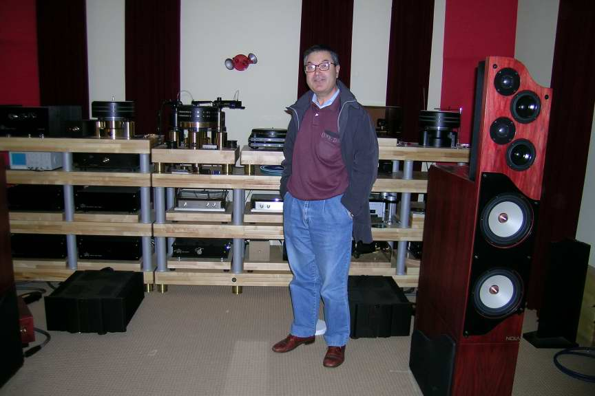
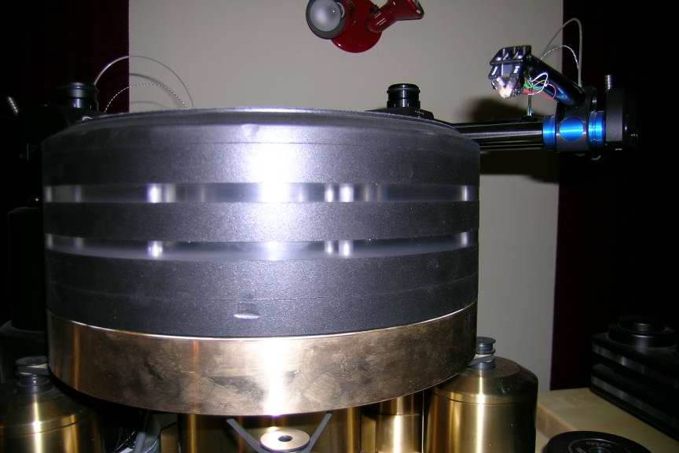
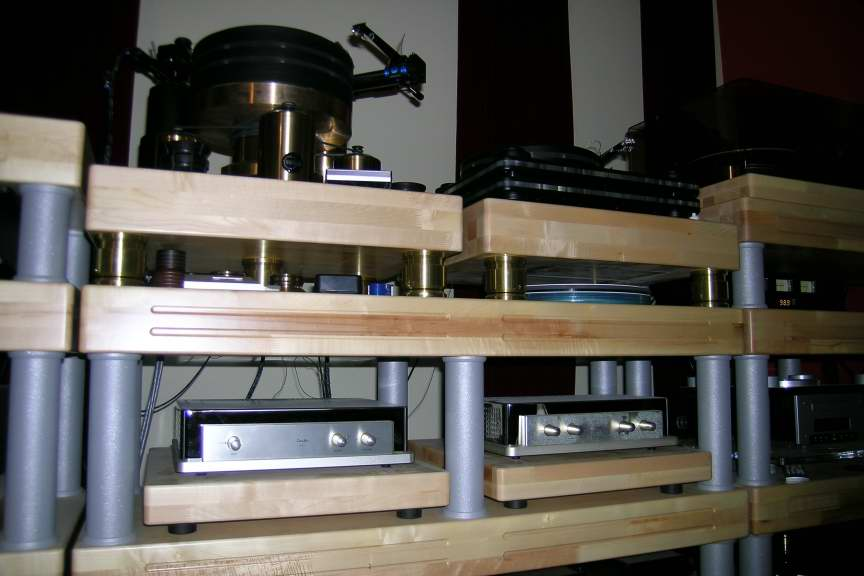
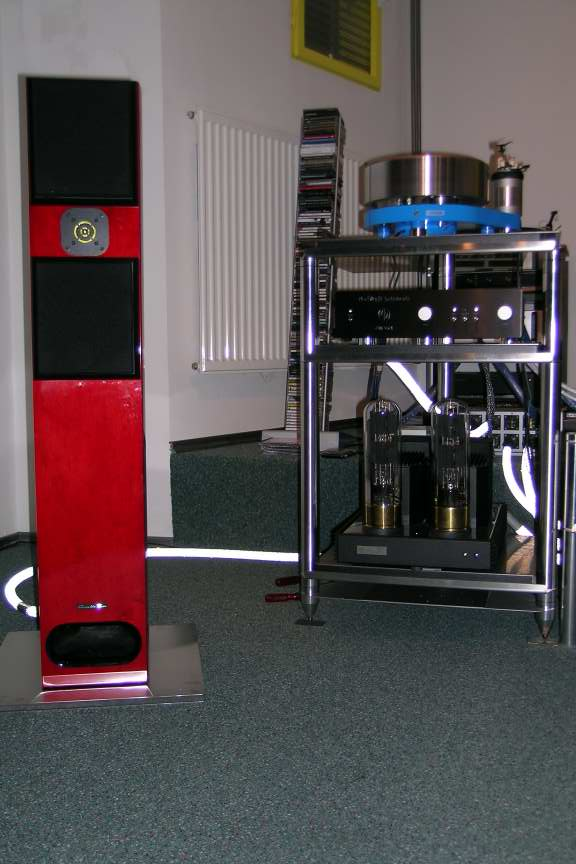
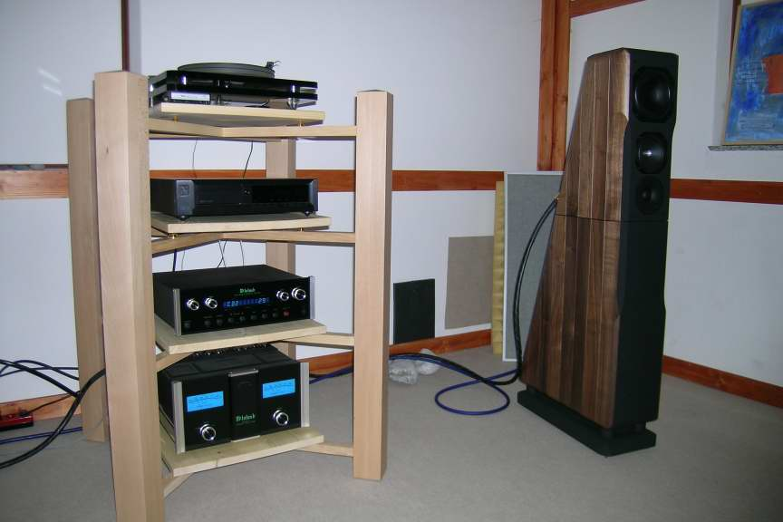

Ljubljana Hi-Fi Show 2006 RELOADED
(from 11/06 email)
Dear Audiophile Friends,
after my reportage of the last Lubiana HiFi Show, here you can find a follow up, that is the visit that I and my friend "Faber" did on 17/11/06 to 3 of the best sounding distributors of the Show.
|
 My friend Faber in front of the Kuzma personal system. |
 The Kuzma XXL prototype with the Air Line tonearm and the Dynavector XXV-1 cartridge. |
 Two ZANDEN (line and phono pre) in the same place! |
1) KUZMA (Kranj)
First we went to the Franc Kuzma atelier, where we listened this top-system: Kuzma XXL turntable with Air Line tangential tonearm and Dynavctor XV-1 cartridge (first picture), Zanden phono and line pre, Karen monobloks power amps and the big Nola loudspeakers, that you can see in the second picture. The resolution and dynamic where at absolute values. We were able to listen very clearly how different are the sound characteristics of a RCA or a Mercury record. We also were able to listen the "train" played by Masekela in the first side of "Hope" at "more than live" volume without any glance of distorsion or less-than-perfect trackability. I think, but I can't prove it, that most of the incredible performances were due to the source and the two Zanden preamps.
Kuzma is still improving his XL turntable and the next year we will probably enjoy also a new tonearm, so... check http://www.kuzma.si !

2) NEL AUDIO (Ljubljana)
The system was similar to that of the Show, that is Mirko Smolic turntable, Whest phono pre, ModWright 9SE pre, Kronzilla SD "Huge Triode" (22W in single ended) but with a cheap Rotel HDCD. Loudspeakers were the Acoustic Zen Adagio, while cables were the top of the same company (see the third picture). At the beginning we were a little disappointed with the sound, probably because of the CD player and the room (which was not really good). Moving the position of the loudspeakers and adding more control in the AC main power (with a big 1:1 transformer and some Faber cables) helped to improve the final result. Nel Audio is anxiously waiting for the already released ModWright phono and the on-the-road CD player units, so the system can improve a lot. In any case, you can already find in this small shop some good components at very good price. For example: 2.5 kE for the ModWright pre or less than 5 kE for the discounted Kronzilla power amp.

3) CANYON AUDIO (Nova Gorica, LJ since 02/07)
The last visit was for this shop, 1 km far from the italian border. The system was a Wadia CD player, McIntosh pre and power amp and Chario Ursa Major loudspeakers, with Oyaide cable (last picture). Unfortunately we were already tired by the audio trip, but in any case we were still able to enjoy the dynamic and with abundand low frequency sound. If you like these parameters more than others, then less than 5 kE for the Ursa Major could be considered almost a bargain. In this case, adding some good Faber calbes improved notably the resolution and soundstage.
FOLLOW UP
From this slovenian trip we brought home a lot new experience but in particular I brought home also the Acoustic Zen Adagio (from Nel) and a pair of Living Voice Avatar 2 (from Canyon) for an "in my system" trial. In these days it is very nice to find distributors so kind and I want to thank them again. I also hope to write you a short report on these 2 speakers against my ProAC. So... stay tuned!
Have a nice listening to all of you,
P.P.S. On the road between Kranj and Ljubljana we went to lunch in the "Skarucna Restaurant", which a friend told me should be a good one. Unfortunately, he didn't told me that you need at least 3 hours and quite a lot of money to eat there. Anyway, it was one of the most hi-end lunch we have ever had! Really a big journey ;)
Tino © May 2007